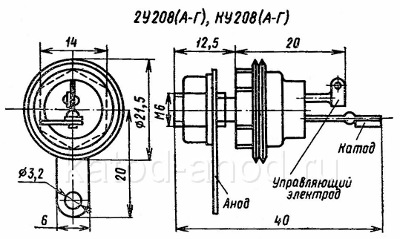

Симистор КУ208
Симисторы (симметричные тиристоры) КУ208Г, КУ208В, КУ208Б, КУ208А - триодные, планарные, структуры p-n-p-n, кремниевые, незапираемые, симметричные. Основное назначение - симметричные переключающие элементы средней мощности для устройств автоматической коммутации и регулирования цепей силовой автоматики на переменном токе.
Имеют металлостеклянный корпус и жёсткие выводы. Тип симистора нанесён на его корпусе. Весит (вместе с комплектующими) не более 18 г. Без комплектующих - 12 г.

| Напряжение в открытом состоянии при Iос = 5 А, Т = +25 и -60°C, не более | 2 В |
| Отпирающее напряжение управления (импульсное), не более | |
| При Т = +25°C для КУ208А, КУ208Б, КУ208В, КУ208Г | 5 В |
| При Т = -60°C для 2У208А, 2У208Б, 2У208В, 2У208Г | 7 В |
| Отпирающий ток управления (импульсный) при Iзс = 10 В, не более | |
| При Т = +25°C | |
| 2У208А, 2У208Б, 2У208В, 2У208Г | 150 мА |
| КУ208А, КУ208Б, КУ208В, КУ208Г | 160 мА |
| При Т = -60°C для 2У208А, 2У208Б, 2У208В, 2У208Г | 250 мА |
| Постоянный ток в закрытом состоянии (зс) при Uзс = Uзс. макс, Т = -60°C и Тмакс, не более |
5 мА |
| Время включения при Uзс = Uзс макс и Iос = 5 А, не более | 5 мкс |
| Время выключения при Uзс = Uзс макс и Iос = 5 А, не более | 5 мкс |
| Ток удержания про Uзс = 10 В, не более | 150 мА |
| Постоянное напряжение в закрытом состоянии: | |
| КУ208А, 2У208А | 100 В |
| КУ208Б, 2У208Б | 200 В |
| КУ208В, 2У208В | 300 В |
| КУ208Г, 2У208Г | 400 В |
| Импульсное напряжение управления при Iи ≤ 50 мкс: | 10 В |
| Скорость нарастания напряжения в закрытом состоянии: | |
| КУ208А, КУ208Б, КУ208В, КУ208Г | 10 В/мкс |
| 2У208А, 2У208Б, 2У208В, 2У208Г | 15 В/мкс |
| Постоянный ток или действующее значение синусоидального тока в открытом состоянии: |
|
| при Тк = -60...+70°C | 5 А |
| при Тк = +110°C для 2У208А, 2У208Б, 2У208В, 2У208Г | 0,5 A |
| Ток в открытом состоянии (импульсный): | |
| при Тк = -60...+70°C: | |
| КУ208А, КУ208Б, КУ208В, КУ208Г | 10 А |
| 2У208А, 2У208Б, 2У208В, 2У208Г | 15 А |
| при Тк = +110°C для 2У208А, 2У208Б, 2У208В, 2У208Г | 1,5 А |
| Перегрузочный ток в открытом состоянии (импульсный) в течение одного полупериода синусоидального сигнала на частоте f = 50 Гц: |
|
| при Тк = -60...+70°C | 30 А |
| при Тк = +110°C для 2У208А, 2У208Б, 2У208В, 2У208Г | 3 А |
| Импульсный ток управления (прямой) при tи ≤50 мкс. | 1 А |
| Рассеиваемая мощность (средняя): | |
| при Тк = -60...+70°C | 10 Вт |
| при Тк = +110°C для 2У208А, 2У208Б, 2У208В, 2У208Г | 1 Вт |
| Рассеиваемая мощность управления (импульсная) при tи ≤ 50 мкс, fу ≤ 400 Гц и Тк = -60...+70°C |
5 Вт |
| Рабочая частота | 400 Гц |
| Рабочая температура: | |
| КУ208А, КУ208Б, КУ208В, КУ208Г | -60...+85°C |
| 2У208А, 2У208Б, 2У208В, 2У208Г | -60...+110°C |
| Нормальная работа симистора обеспечивается при следующих полярностях анодного и управляющего напряжений: |
|
| Напряжение анода | Напряжение упр. электрода |
| + | + |
| + | - |
| - | - |
| Допустимое значение статического потенциала | 2000 В. |